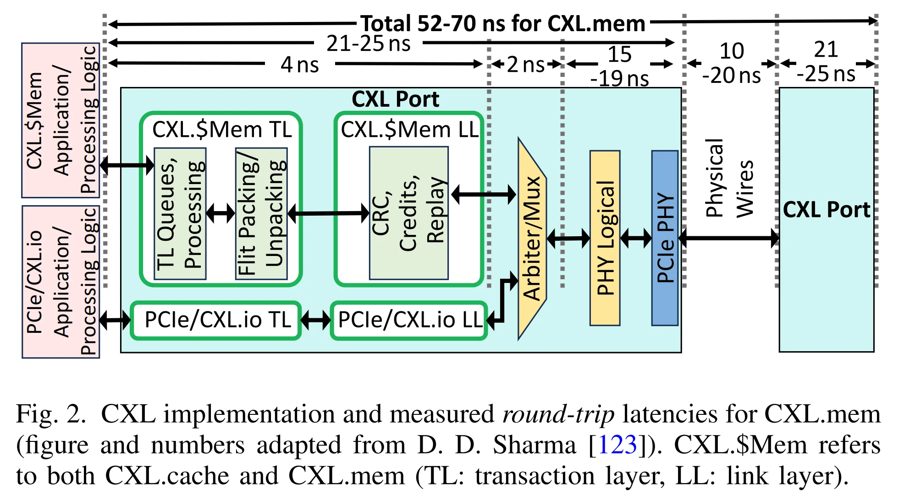
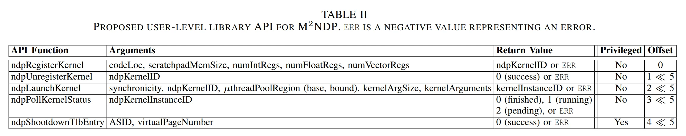
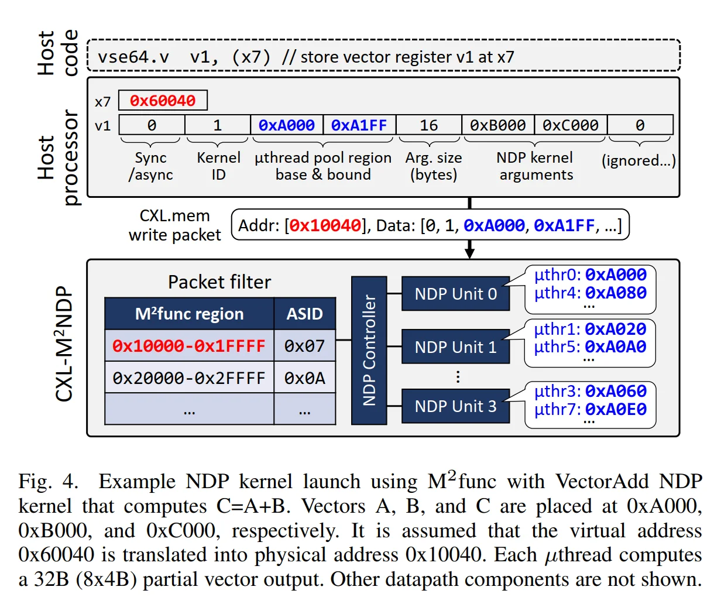
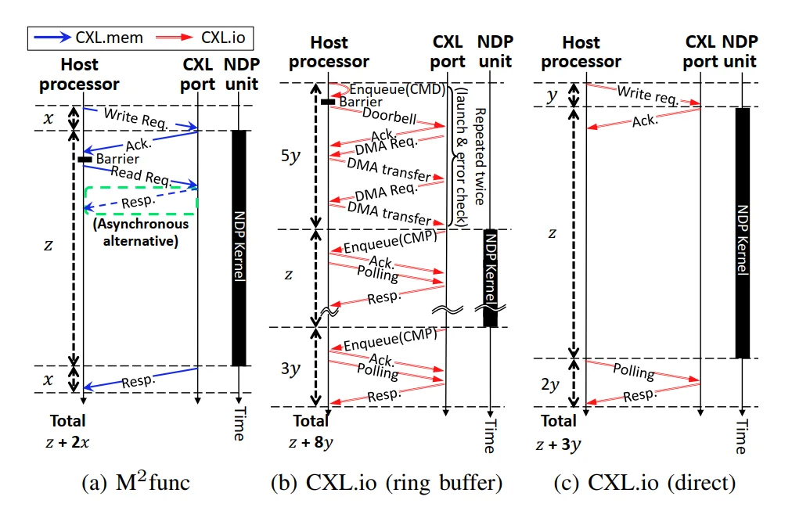
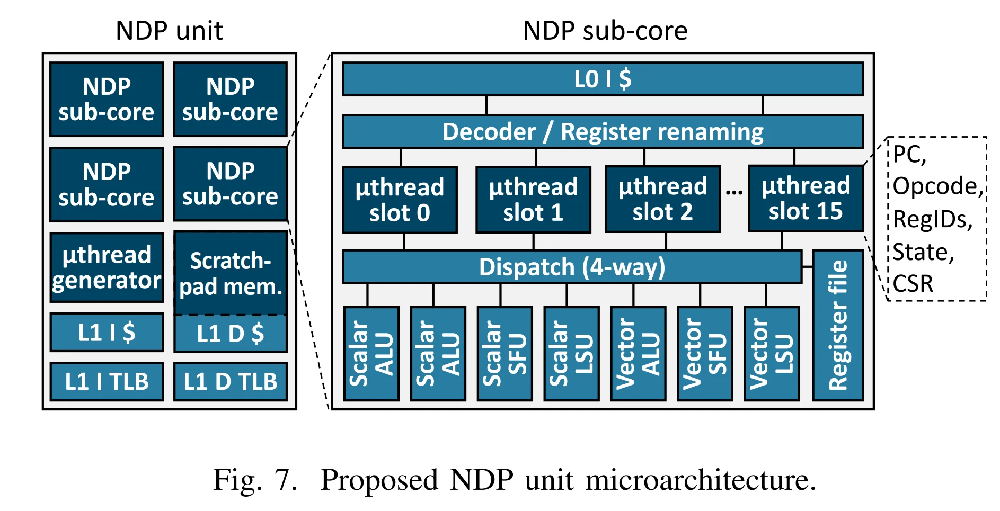
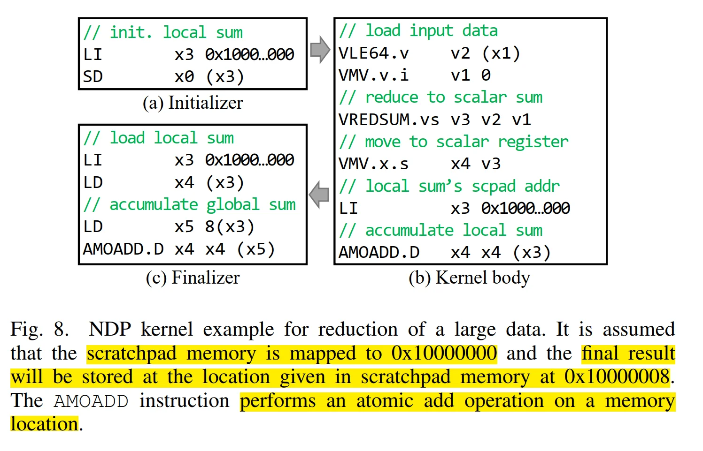

Low-overhead General-purpose Near-Data Processing in CXL Memory Expanders¶
本文研究的是：怎样在 CXL Memory Expander 中加入低成本、可编程的计算能力，并降低 Host 调用这些计算单元的开销。
Date: 2026-10-13
| 对应部分 | 整理素材 |
|---|---|
| I. Introduction | Introduction 拆解 |
| II. Background and Motivation | II-A～C 拆解 |
| III-A～D | 章节拆解、硬件与执行过程问答 |
| III-E～H | 微架构、存储、编程模型与虚拟内存拆解 |
阅读这篇论文时先区分两个问题
Host → NDP：怎样注册、启动、查询一个计算任务？对应 M² func。
NDP → DRAM：怎样低成本地产生足够多的并发访存、高效执行任务？对应 M² µthread。
两者共同组成 M²NDP。前者是管理接口，后者是线程执行模型；实际执行指令的处理器硬件叫 NDP Unit。
I. Introduction¶
1.1 为什么需要 CXL Memory Expander？¶
虽然现代服务器 CPU 的地址空间极大（例如 64 位 CPU 的理论地址空间可以有 4 PB），但是 CPU 能直接连接的 DDR 通道和 DIMM 数量有限，而 KVStore、LLM、推荐系统、图计算和数据库等应用需要很大的内存容量。因此，可以通过 CXL 连接额外的内存扩展设备。
CXL Memory Expander 包含控制器和 DRAM；CXL memory 指的是这类设备提供的内存。 Host CPU 可以通过 CXL.mem，使用普通 load/store 访问它。
例如 x = array[i] 对于 Host 来说仍然是一次普通的程序访存，区别在于地址所对应的数据，可能位于 CPU 直接连接的 Local DRAM，也可能位于 CXL Memory Expander 的 DRAM。
内存控制器、DDR 和 DIMM
- 内存控制器：CPU 和 DDR 内存之间的 “翻译+调度+驱动” 芯片。现代服务器/PC CPU，内存控制器直接集成在 CPU 内部（die 里面）。功能：
- 协议翻译：CPU 核心发出来 load/store 请求（简单地址） → 转换成 DDR 总线需要的复杂信号：行地址、列地址、预充电、刷新命令。DDR 颗粒不懂 CPU 的指令，全靠 MC 发命令。
- 信号驱动：驱动高速并行 DDR 总线，收发数据。DDR 是并行总线，很多根数据线。
- 时序控制：tRCD、tRP、tRAS 这些内存时序参数，都是内存控制器来严格控制。
- ECC 校验（服务器）：校验数据，纠正内存比特错误。
- 刷新管理：DRAM 电容会漏电，必须周期性刷新，这件事由内存控制器完成。
- DDR： Double Data Rate，双倍数据率 SDRAM，就是 DRAM 内存芯片的标准协议。
- DIMM：Dual In-line Memory Module，双列直插内存模块，就是我们口头说的“内存条”，把 DRAM chips 封装在 PCB 上的模块。
- DPC：DIMM Per Channel，每通道几条 DIMM。一个 DDR 通道，是内存控制器的一组并行接口，一个通道可以插 1 条或者 2 条 DIMM：DPC = 1/2。
不能无限 3DPC /4DPC：DDR 电气规范不允许，一个并行 DDR 通道最多挂 2 条 DIMM。
现代 CPU 物理地址空间巨大，远大于 1TB——但是内存控制器通道数量是硬限制，例如：
- 比如单路 CPU 最多 8 通道 DDR5
- 每通道最多插 1 根 DIMM，或者部分支持每通道 2 根（1DPC / 2DPC）
- 单根 DIMM 容量上限：当前 DDR5 最大单条是 128GB
- 理论上的最大内存：\(8 \times \text{DPC}(=2) \times 128 = 2\text{TB}\)
但是这里有代价：
- 2DPC 会降频：如果每通道插两根 DIMM，内存控制器工作频率下降，带宽下跌、延迟上升、信号完整性变差。主板 / CPU 对 2DPC 负载、散热、PCB 布线要求显著变高。
- 成本爆炸：大容量 DIMM 单价远高于普通 DIMM。
- CPU 封装 / PCB 信号瓶颈：内存信号是高速并行总线，通道越多、走线越长、负载越多，信号完整性 SI 越难。CPU 封装引脚数量有限，内存通道引脚是稀缺资源。不能无限增加内存通道。
而 CXL 不走 CPU 原生 DDR 内存通道，复用 PCIe/CXL 高速串行链路，不占用 CPU 原生 DDR 通道引脚。
1.2 扩展容量后，为什么程序仍然可能变慢？¶
容量增加并不等于 CPU 到这些数据的访问能力同步增加。这里有两个瓶颈：
- 带宽瓶颈：CXL memory 内部的 DRAM 带宽很高，但 CPU 访问它时需要经过带宽有限的 CXL link。
- 延迟瓶颈：一次 load 要经过更长的访问路径，数据返回并能被 CPU 使用所需的时间增加。
Fig. 1(a) 对应第一类问题：连续扫描大数组等程序需要搬运大量数据，性能容易受到链路带宽限制。回答材料引述的性能下降最高约为 9.9×，这是相应工作负载与配置下的结果。
Fig. 1(b) 对应第二类问题：例如 pointer chasing，必须先读出一个指针，才能知道下一次应该访问哪里。这些访问之间存在依赖，单次 load 的等待时间会直接累积，并影响 KVStore 等应用的尾延迟。
一些常见的概念：
| 概念 | 含义 | 对本文的作用 |
|---|---|---|
| Operational / arithmetic intensity | 每搬运一定量数据，能完成多少计算 | 低计算强度意味着访存成本更容易主导性能 |
| Memory-bound | 性能主要受内存访问限制 | 本文 NDP 的主要目标 |
| Bandwidth-intensive | 需要持续搬运大量数据 | 关注单位时间能传输多少数据 |
| Latency-sensitive | 对一次访问的等待时间敏感（例如光刻机控制系统） | 关注 load 到结果可使用之间的延迟 |
VectorAdd 的计算强度很低
C[i] = A[i] + B[i] 需要读取两个输入、写入一个输出，却只做一次加法。
如果 A、B、C 位于 CXL memory，而计算由 Host CPU 完成，大量数据就需要跨越 CXL link。增加 CPU 的加法器数量，并不能直接消除链路瓶颈。
1.3 NDP：把计算移到数据附近¶
Near-Data Processing（NDP） 的思路是：在 CXL memory 侧放置计算单元，让它直接访问设备内部 DRAM，减少数据跨 CXL link 的搬运。
例如，对一个 10 GB 数组求和：
- Host 计算：数组数据经过 CXL link 返回 CPU，再由 CPU 求和。
- NDP 计算：设备侧读取数组并求和，Host 只需提交任务，并取得少量结果。
收益来自减少跨链路的数据流量，并利用 CXL memory 内部的 DRAM 带宽。
那么这里就有一个很现实、很影响实际收益的问题：计算任务是否适合卸载，仍取决于程序的访存特征与调用开销。
1.4 已有 NDP 为什么还不够？¶
首先是计算硬件的通用性和成本：
| 候选方案 | 优点 | 本文关注的问题 |
|---|---|---|
| 专用 ASIC | 对目标算法高效 | 工作负载覆盖有限；同时加入多类专用硬件会增加面积与 NRE（一次性设计成本） |
| CPU core | 通用、可编程 | 复杂乱序控制、大缓存等硬件，对低计算强度的 NDP 任务可能不划算、或者场景不匹配 |
| GPU 风格计算核心 | 大量线程、较高访存并发 | 高计算吞吐的资源组织，不一定符合低成本 memory-bound NDP 的需求 |
| FPGA | 硬件可重配置 | 普通软件开发者不能像编写处理器程序一样直接使用，编程与实现流程较复杂 |
其次是Host 如何调用 NDP。即使设备侧计算很快，启动任务、获取状态等控制操作仍可能经过 runtime、driver、命令队列、DMA 和 CXL.io/PCIe 事务，产生微秒级开销。
短任务特别容易被启动开销淹没
假设一个 kernel 计算只需 2 µs，启动却需要 4 µs，那么仅启动开销就超过计算本身。
对运行数十毫秒的任务，这种开销容易被摊薄；对小任务、短任务、频繁调用的任务，即 fine-grained offloading，它可能决定端到端性能。
1.5 M²NDP 的两项核心机制¶
| 机制 | 要解决的问题 | 方法 |
|---|---|---|
| M² func：Memory-Mapped Function | Host–NDP 管理通信开销高 | 将管理调用编码为对预留地址的 CXL.mem 访问；Address 标识函数，Writing data承载参数 |
| M² µthread：Memory-Mapped µthread | 通用 NDP 的计算硬件成本与访存并发 | 使用轻量执行上下文、FGMT、地址映射和 RISC-V Vector 执行，提高单位成本下的访存并发 |
M² func 不要求修改 Host CPU 硬件或标准 CXL.mem 报文类型，设备侧通过地址识别管理调用。M² µthread 则让可编程 NDP Unit 执行不同 kernel。
相对于使用 passive CXL memory 的 Host 基线，最高加速 128×，几何平均加速 14.5×，最高能耗降低 87.9%。
II. Background and Motivation¶
A. Considerations in Architecting NDP in CXL Memory¶
这一节确定计算架构的设计目标：面向大 working set、低计算强度、难以被片上 Cache 容纳的 memory-bound 应用，以较低成本充分利用设备内部 DRAM 带宽。
如果程序本身 compute-bound，或数据规模很小且缓存复用很好，留在 Host CPU/GPU 上计算可能更合适。
1. Table I：GPU 与 CXL-NDP 的设计目标¶
| 比较维度 | GPU | 本文讨论的 CXL memory + NDP |
|---|---|---|
| 内存容量需求 | 相对较低 | 较高，首先承担内存扩容职责 |
| 面积与功耗成本 | 可投入较多计算资源 | 需要保持较低附加成本 |
| FLOPS / Memory BW | 较高 | 较低 |
| 目标工作负载 | 偏向计算密集型 | 偏向访存密集型 |
这张表表达的是论文的产品与工作负载定位。GPU 也能执行 memory-bound 应用，这里的比较用于解释作者为什么重新设计 NDP 的线程模型和资源组织。
2. 为什么重点是访存并发？¶
DRAM 访问需要等待。如果处理器只有一个执行上下文，发出 load 后长时间等待，执行单元和内存系统都可能无法充分利用。
作者希望维持很多 outstanding memory requests，即已经发出、尚未完成的访存请求，让内存系统能持续处理请求。
对应的设计方向是：
- 少量寄存器 / µthread：降低每个上下文的保存成本。
- 大量驻留 µthreads：某个线程等待时，还有其他可执行线程。
- FGMT（Fine-Grained Multithreading）：细粒度地交错发射不同线程的指令。
- RISC-V scalar + RVV：标量指令处理控制与地址，向量指令处理批量数据。
对于已经受 DRAM 带宽限制的程序，继续增加计算能力可能收益有限。因此，通用处理器只要能够充分利用内存带宽，就可能取得接近专用逻辑的性能，同时保留可编程性。
B. Compute Express Link Interconnect¶
这一节说明 M²NDP 可以利用哪些 CXL 能力，以及这些能力的边界。
1. 三类 CXL 协议分别负责什么？¶
CXL 使用 PCIe PHY，也就是物理传输层，其上包含不同用途的协议。
| 协议 | 本文相关的作用 |
|---|---|
| CXL.io | PCIe 风格的 I/O、配置和设备管理 |
| CXL.cache | 支持设备侧缓存与 Host 之间的一致性交互 |
| CXL.mem | Host 使用内存语义访问设备内存 |
本文最重要的是 CXL.mem：Host 可以通过 load/store 访问 CXL memory，为 M² func 提供较低延迟的控制路径。
共享物理链路，不等于访问语义相同
CXL.io 与 CXL.mem 可以使用同一类物理链路，但事务用途和处理路径不同。
类似地，Host 能通过 CXL.mem 访问设备内存，不代表设备也能通过 CXL.mem 直接访问 Host Local DRAM。
2. Fig. 2：不同延迟数字的统计范围¶

| 数字 | 材料中的含义 |
|---|---|
| 约 52～70 ns | CXL 协议栈与链路 / wire 的往返延迟 |
| 约 150～175 ns | 典型完整 CXL memory load-to-use 延迟，包含缓存层次、协议、链路与 DRAM 等路径 |
| 约 300 ns | 经过 CXL switch 时，内存访问延迟量级 |
| 约 1 µs 或更高 | 传统 CXL.io/PCIe 通信的典型量级 |
Load-to-use 是从 load 到数据能够被处理器使用的时间。因此，不能把协议和链路的几十纳秒，直接当成访问一次 DRAM 的总延迟。
这些数字是回答材料引述的典型值或建模假设，不是所有 CXL 设备固定具有的性能。
3. HDM、HDM-H 与 HDM-DB¶
HDM（Host-managed Device Memory）：设备上的 DRAM，被 Host 纳入系统内存管理，并通过 Host Physical Address（HPA）访问。
Passive CXL memory 没有 NDP，只提供内存。Host 可以缓存其中的数据；设备不会自己执行程序、主动修改这些数据。这种情形对应 HDM-H：host-only coherent model。
加入 NDP 后，设备也会读写 HDM，同一个地址的数据可能同时存在于 Host Cache 与设备 DRAM 中。
为什么 NDP 需要与 Host Cache 协调？
Host Cache 中保存 A = 10。如果 NDP 将 DRAM 中的 A 改成 20，而 Host 仍读取缓存副本，就可能继续得到旧值 10。
问题来自多个位置保存同一地址的副本。这与多核 CPU 的缓存一致性问题有相似之处。
M²NDP 使用 HDM-DB 模型，相关机制包括：
- DCOH（Device Coherence Agent）：设备侧负责一致性交互的代理。
- Snoop Filter：跟踪 Host 对 HDM cache line 的缓存情况。
- BI（Back Invalidation）：设备向 Host 发起失效请求，使相关缓存副本失效。
可以用“一个 CPU core 写共享数据，需要让其他 core 的旧副本失效”来类比这里的 NDP–Host 交互。这个类比用于理解一致性需求，不能据此认为 CXL 使用的报文和状态机就等同于 MESI。
4. ATS、ATC 与 P2P¶
| 机制 | 含义 | 为什么在本文出现？ |
|---|---|---|
| ATS：Address Translation Services | 设备向 Host 请求地址转换服务 | NDP 使用虚拟地址时需要转换；请求可能有微秒级开销 |
| ATC：Address Translation Cache | 设备侧保存地址转换结果的缓存 | 避免每次访问都重新请求转换 |
| P2P：Peer-to-Peer | 设备之间直接访问 | 支持访问 peer CXL device 的 HDM |
III-H 会进一步说明 NDP 的虚拟地址、片上 TLB 与 DRAM-TLB。这里先记住：低延迟访存、缓存一致性、地址转换和设备间访问，是不同的系统问题。
C. Communication Overhead with CXL.io/PCIe¶
这一节解释为什么计算核心之外，还需要 M² func。
1. Ring Buffer：软件队列与设备硬件协作¶
Ring Buffer 是循环命令队列。 Host 软件产生 command，设备取出 command 并执行。整个提交机制还需要 runtime/driver、doorbell、DMA engine 和 device command processor 等支持。
典型路径如下：
- 用户程序调用 launch API，由 runtime/driver 构造 command descriptor，描述要启动的程序及参数。
- command 位于 Host memory，Host 将 command pointer 放入 ring buffer。
- Host 更新 write/tail pointer，或写 doorbell register，通知设备有新命令。
- 设备通过 CXL.io/PCIe 和 DMA 获取 command pointer。
- 设备再读取真正的 command，交给 command processor 解析。
- 设备启动 kernel。
- 计算完成后，Host 通过 polling 或 interrupt 获知完成状态。
其中出现的各种概念：
| 名称 | 在这条路径中做什么？ |
|---|---|
| Runtime / Driver | Host 侧软件，负责提交任务和管理设备接口 |
| Doorbell | Host 写入后，通知设备检查新任务的寄存器 |
| DMA engine | 设备侧读取命令或搬运数据的硬件 |
| Command processor | 设备侧解析命令并安排执行的控制硬件 |
| Polling | Host 主动反复查询状态 |
| Interrupt | 设备发出事件通知，由 Host 处理 |
这里出现了两种 kernel
Kernel space / kernel-mode 指 Host 操作系统内核的执行环境，即：内核态。
NDP kernel 指准备交给 NDP 执行的计算程序。
“切换到 kernel space”和“启动 NDP kernel”是两件不同的事。
论文中给出的典型开销数据：launch 约 3～6 µs、polling 约 2～3 µs、DMA 至少约 1 µs；interrupt 的开销可能相近或更高。这些量级说明控制路径可能很重，不能机械地将所有数字相加，视为每次提交都必然发生的固定延迟。
2. Direct MMIO：直接读写设备寄存器¶
MMIO（Memory-Mapped I/O） 的基本思路与 SoC 中通过地址访问 UART 等外设寄存器相近：CPU 执行 load/store，地址译码后访问设备寄存器。
Direct MMIO 方案通过 PCIe BAR 暴露 COMMAND、ARG、STATUS 等寄存器。启动路径为：
CPU store → PCIe Root Complex → Memory Write TLP → Device BAR → 寄存器 → 启动控制逻辑。
完成后，Host 读 STATUS，或接收设备的中断通知。
它省去了 ring buffer 管理与 DMA 获取 command 的部分开销，但论文比较的固定寄存器接口存在限制：
- 可用于保存命令和参数的物理寄存器数量有限。
- 多个请求容易争用同一套状态，难以自然支持大量并发调用。
- 多个用户进程共享设备寄存器时，需要额外的隔离与权限管理，可能涉及 driver 和内核态切换。
3. M² func 希望同时满足什么？¶
低延迟调用、支持并发请求、按进程隔离、初始化后可由用户态直接调用，并保持 Host CPU 与标准 CXL.mem 兼容。
这就引出第三节：利用 CXL.mem 的地址和写入数据来表达函数调用，由设备侧识别其语义。
III. Memory-mapped Near-Data Processing¶
A. Overview¶
整理素材：III-A～D 拆解、硬件与执行过程问答。
1. 先对应软件对象与硬件实体¶
一些基础概念：
| 名称 | 属于什么？ | 具体作用 |
|---|---|---|
| NDP kernel | 程序代码及相关 metadata | 描述要执行的计算，最终使用 RISC-V/RVV 指令 |
| Kernel instance | 一次启动产生的任务实例 | 同一份 kernel code 可以用不同数据启动多次 |
| M² µthread | 轻量执行实例 / 硬件线程上下文 | 执行 kernel 的一个 body，通常处理某一块数据 |
| µthread slot | 保存线程状态的硬件资源 | 保存 PC、寄存器映射等，使线程可以驻留和切换 |
| NDP Unit | 处理器硬件 | 包含 sub-core、执行单元、寄存器和片上存储等 |
| NDP Controller | 设备侧控制硬件 | 管理 kernel、启动请求、资源和完成状态 |
| M² func | Host–NDP 管理接口机制 | 把管理函数编码为预留地址上的内存访问 |
多个线程不等于多个完整处理器
多个 µthread context 可以共享少量 ALU、LSU 和 vector units。
“有 64 个 µthread slot”意味着能保存相应数量的执行上下文，不能据此推断有 64 套独立运算数据通路。
2. 系统中的位置与数据路径¶
下面只画出本文相关模块，NDP 的计算与 DRAM 访问都发生在 CXL memory 侧。
Host process → load/store → CXL.mem
│
CXL Memory Expander
▼
Packet Filter
├─ 普通地址 → 内存访问路径
└─ M² func 地址
▼
NDP Controller
▼
NDP Units / sub-cores
▼
片上互联、缓存与内存控制器
▼
DRAM
NDP Controller 的职责包括接收管理调用、记录 kernel metadata、检查资源、安排 NDP Units 执行、跟踪完成状态并保存返回信息。它与执行算术指令的 NDP Units 分工不同。
材料将它类比为 GPU 的管理 microcontroller / command processor，但论文没有给出其 RTL 细节。因此不能确定它内部究竟采用多少 FSM，或是否使用某个具体的小处理器核。
3. 一次计算任务的完整路径¶
以 C = A + B 为例，A/B/C 已位于 CXL memory 中：
- Host 注册 kernel：提交代码位置与寄存器 / scratchpad 需求，取得 kernel ID。
- Host 启动实例：提供同步方式、kernel ID、pool 和 B/C base 等参数。
- 控制请求到达设备：Host 向 M² func 地址 store，Packet Filter 将 CXL.mem 请求交给 NDP Controller。
- 设备安排资源：Controller 管理本次 instance；Generator 根据 pool 生成 µthreads。
- 处理器执行代码：slot 保存上下文，PC 取指，scalar / vector units 执行程序。
- 访问输入与输出：普通 kernel 访存需要地址转换，再通过缓存 / 互联 / memory controller 访问 DRAM；参数和局部数据可放在 scratchpad。
- 完成与返回状态：本次工作结束后，Controller 更新实例状态；Host 通过同步返回或异步查询确认完成。
- Host 使用计算结果：访问普通 CXL memory 中的 C，而非把完整 C 数组作为管理函数返回值接收。
后面的 B～H 分别展开这条路径中的接口、调度、执行、存储与地址转换。
B. Memory-Mapped NDP Management Function¶
1. M² func region：用地址表示管理函数¶
设备预留一段 CXL memory 物理地址空间作为 M² func region。Packet Filter 检查请求地址：
- 普通地址：继续处理为正常 DRAM 访问。
- M² func 地址：截获为管理调用，交给 NDP Controller。
因此，这个区域的核心是地址对应的接口语义，而非存放输入数组或 kernel 代码的一块普通 DRAM buffer。
材料给出的函数 offset 以 32 B 为间隔：
| 相对 region base 的 offset | 管理函数 | 作用 |
|---|---|---|
0x00，即 0 << 5 |
ndpRegisterKernel |
注册代码位置及资源需求 |
0x20，即 1 << 5 |
ndpUnregisterKernel |
注销 kernel |
0x40，即 2 << 5 |
ndpLaunchKernel |
启动一次 kernel instance |
0x60，即 3 << 5 |
ndpPollKernelStatus |
查询实例状态 |
0x80，即 4 << 5 |
ndpShootdownTlbEntry |
使相关地址转换失效，属于特权管理操作 |
以上地址都并非完全地址，而是 offset——因此事实上存在多个 M² func 区域，每个区域有一个基址（Base）。例如 region base 为 0x10000，访问 0x10040 就对应 LaunchKernel。
论文中的原表格：

2. 初始化、进程隔离与 uncacheable¶
Host process 通过 driver 申请自己的 M² func region，driver 将区域设为 uncacheable，并通过 CXL.io 告知设备其 base、bound 和 ASID。
Packet Filter 保存这组 metadata（base, bound, ASID），每个进程需要 18 B。初始化使用 CXL.io，性能收益主要来自之后频繁的管理调用走 CXL.mem。
ASID（Address Space Identifier） 用于区分地址空间。不同进程的 region 可以指向同一套 NDP Units，同时保留各自的控制信息与隔离关系。
为什么共用计算硬件，却要分配不同 region？
Region 相当于每个进程自己的控制入口。分开以后，设备能识别请求归属，Host 也能通过映射和权限保护这些入口。
按进程分配接口，不会复制处理器硬件。 计算资源仍由设备统一管理。
比如大家 Launch Kernel 都是用的 2 << 5 ，即 offset=0x40，如果没有 region 区分，那么所有 progress 的 launch 请求可能都会变为：0x10040，设备就无法区分属于哪个进程。
为什么控制地址必须绕过 Host Cache？
如果 store 仅更新了 CPU Cache，设备就收不到请求，无法触发管理函数。
因此，M² func region 必须 uncacheable，使访问真正到达设备。普通输入输出数组与该控制区域的缓存属性需要分开理解。
3. 调用编码与返回值¶
| CXL.mem 请求中的部分 | 管理接口中的含义 |
|---|---|
| 请求地址 | 调用哪个函数，以及属于哪个进程的 region |
| Write data | 函数参数 |
| 后续对同一函数地址的 read | 获取该函数的控制返回值 |
一次带返回值的调用可概括为：store 参数 → fence → load 返回值。
这里的 fence 用于保证调用写入与返回值读取之间的顺序；write 的确认本身不能承载任意函数返回值，所以需要后续 read。
Host 可以利用向量寄存器打包参数。例如 Fig. 4 中的 vse64.v v1, (x7) 将 v1 内的启动参数写入 x7 指向的控制地址。这里写的是 metadata / arguments，并非 A、B、C 数组的数据本体。
案例：Fig 4.

C. NDP Kernel Launch¶
1. 注册参数与启动参数¶
注册说明“程序在哪里、需要什么资源”；启动说明“这次执行哪段程序、处理哪些数据”。两者不同。
ndpRegisterKernel 参数 |
含义 |
|---|---|
codeLoc |
kernel code 的位置 |
scratchpadMemSize |
所需 scratchpad 空间 |
numIntRegs |
每个 µthread 的整数寄存器需求 |
numFloatRegs |
每个 µthread 的浮点寄存器需求 |
numVectorRegs |
每个 µthread 的向量寄存器需求 |
ndpLaunchKernel 参数 |
含义 |
|---|---|
synchronicity |
采用同步还是异步调用语义 |
ndpKernelID |
要运行哪一段已经注册好的 NDP kernel code |
µthreadPoolRegion(base, bound) |
用一段虚拟地址范围定义本次 µthreads 的映射空间 |
kernelArgSize |
后续 kernel arguments 的字节数 |
kernelArguments |
kernel 使用的指针 / base address、长度等参数 |
前四项属于 M² func 的启动控制参数；kernelArguments 才是计算程序本身使用的参数。大数组不直接塞入启动请求，而是通过地址参数指向已经位于 CXL memory 中的数据。
2. µthread pool region¶
传统 GPU 逻辑中，每一个 thread 通过 Thread ID 计算自己的数据访问地址，比如：
所以 thread 是先存在的，再由 thread ID 算数据地址。
M²NDP 反过来：数据地址本身定义这个 µthread，也就是——μthread pool region。它是与一个 kernel instance 关联的虚拟地址区域，用于决定生成哪些 µthreads，以及每个 µthread 对应的 mapped address 和 offset。
例如 [0xA000, 0xA1FF]，每个 µthread 对应 32 B，则得到：
- μ thread 0: 0xA000
- μ thread 1: 0xA020
- μ thread 2: 0xA040
- ...
它不是存放线程对象的数组，也不是 M² func region。 后者由 Host 用于发控制命令，前者属于设备侧执行的数据映射模型。
3. 同步、异步和两类“返回”¶
| 调用方式 | Host 何时得到调用返回？ | 用途 |
|---|---|---|
| Synchronous | kernel 结束后，相关返回值读取才完成 | 后续工作立即依赖结果时，Host 等待 Kernel 计算结束后再继续工作 |
| Asynchronous | 提交后取得 kernelInstanceID，无需等计算结束 |
Host 可以继续计算或提交其他任务，之后再查询状态 |
这里的同步 / 异步是软件调用语义，与同步时钟电路、异步逻辑电路无关。“异步立即返回”指不等待 kernel 完成，Host computation, 其他 NDP Kernels 和当前 NDP Kernels 可以并发执行。
还需要区分：
- 控制返回值：
kernelInstanceID、错误或运行状态，Host 对同一 M²func 地址 load。 - 计算输出：例如
C[]，由 kernel 的 store 写入普通 CXL memory；确认完成后，Host 再访问该输出数据。
ndpKernelID 标识一份已注册程序，kernelInstanceID 标识其中一次启动；两次运行同一程序，仍是不同实例。
4. 多个请求与硬件资源不足¶
这里的 resource 包括 µthread slots、physical registers、scratchpad 空间、可用执行容量，以及 launch buffer entries。
| 设备状态 | 启动请求如何处理？ |
|---|---|
| 资源足够 | 安排执行，允许多个 kernel 并发 |
| 资源不足，但请求 buffer 有空间 | 暂存请求，等待之前的 kernel instance 资源释放 |
| 请求 buffer 也已满 | 返回 error |
同一 kernel 的整个 pool 也不必一次全部驻留。硬件可以先生成一批 µthreads，完成后释放 slot 和寄存器，再继续生成后续 µthreads。
因此 M² func 并不是：一次只能跑一个 kernel 的 command register。它设计上支持：多个 Host thread / process 发起多个 concurrent NDP kernels。
这正是它优于“直接 MMIO 写几个 device register”的一部分。
5. Fig. 5：通信开销与端到端时间¶
Fig 5.

材料采用以下简化模型：
其中 x 是 CXL.mem 的单程建模延迟，y 是 CXL.io/PCIe 的单程建模延迟。
| 机制 | 通信关键路径的特点 | 模型中的通信开销 | 端到端时间 |
|---|---|---|---|
| M² func | CXL.mem 提交与返回，减少命令获取环节 | \(2x = 0.15\ \mathrm{µs}\) | \(z + 2x\) |
| Ring Buffer | 排队、通知、DMA 取命令、完成 / 状态交互 | \(8y = 4\ \mathrm{µs}\) | \(z + 8y\) |
| Direct MMIO | 寄存器启动与状态交互 | \(3y = 1.5\ \mathrm{µs}\) | \(z + 3y\) |
若 \(z=6.4\ \mathrm{µs}\)，则三者分别约为 6.55 µs、10.4 µs、7.9 µs。
Fig. 5 是通信关键路径模型
store → fence → load 描述调用语义；\(z+2x\) 描述图中的简化关键路径。不能把 \(2x\) 解释成整个系统仅有两个报文，也不能为每个软件或硬件步骤都分配同一个固定延迟。
这些公式的作用是说明：kernel 越短，压缩 launch / completion 开销越重要。 它们与 II-C 引述的已有系统开销量级，应分别按各自统计范围理解。
D. Memory-Mapped µthread¶
1. 轻量上下文与 FGMT¶
复杂 OoO CPU 可以在单个线程中寻找可并行执行的指令，但需要 ROB、issue queue、load/store queue、register renaming 和 wakeup/select 等硬件。本文面对低计算强度的 NDP 任务，选择另一条路线：单个 µthread 顺序执行，不同 µthreads 交错发射。
例如：当 µthread 0 因为 load 等待数据时，调度器选择其他可执行的 µthread，使执行单元继续工作。这就是 FGMT：Fine-Grained Multithreading。
它隐藏的是等待时间对整体吞吐的影响，并没有让一次 DRAM 访问本身变快。
“µ”强调上下文轻量。 普通 CPU Hardware thread 中，每个硬件线程都包含：
无论这个程序实际用不用，都有一个完整 ISA context 的概念。如果一次要保存几十个/几百个 Thread context，Register File 的面积就会很大。而作者注意到：
memory-bound kernel 往往寄存器需求很少。
因此，M² NDP Kernel 注册时声明寄存器需求，硬件按需求给每个 µthread 分配寄存器。例如，一个 kernel 只需少量整数和向量寄存器，就不必为每个驻留线程预留一整套很大的寄存器存储。
因果关系是：每个线程成本降低 → 同样面积可保存更多上下文 → 更多可交错执行的线程 → 更多未完成访存请求 → 更好地利用 DRAM 带宽。
2. 地址驱动：mapped address 与 offset¶
GPU 程序通常从 blockIdx、threadIdx、blockDim 算出元素编号，再计算数据地址。
M² µthread 以 pool region 的地址空间定义执行实例，创建时直接给出：
- x1 = mapped address：当前 µthread 对应的数据块地址。
- x2 = offset：该地址相对于 pool base 的字节偏移。
这里的 x1 和 x2 就是 µthread 的寄存器映射。它们是在 µthread 生成时就被分配并且 rename 好的寄存器。因此，这里体现出了 μthread generator 的作用。
用 \(G\) 表示每个 µthread 的数据粒度，则可以把映射写成：
这是对材料中地址例子的公式化表达。
Fig. 4：从 Host 控制地址到 VectorAdd 数据地址
Host 中 x7 保存控制入口的虚拟地址 0x60040；经过 Host 地址转换后，请求地址为 0x10040。
设备上的 M² func base 是 0x10000，所以 0x10040 对应 base + 0x40，即 LaunchKernel。Packet Filter 将该访问交给 NDP Controller。
本次 VectorAdd 的 A、B、C 起始地址分别为 0xA000、0xB000、0xC000。选 A 的 [0xA000, 0xA1FF] 作为 pool，B/C base 作为 kernel arguments，每个 µthread 处理 32 B。
| µthread | x1：mapped address | x2：offset | B 地址 | C 地址 |
|---|---|---|---|---|
| 0 | 0xA000 |
0x00 |
0xB000 |
0xC000 |
| 1 | 0xA020 |
0x20 |
0xB020 |
0xC020 |
| 2 | 0xA040 |
0x40 |
0xB040 |
0xC040 |
| 3 | 0xA060 |
0x60 |
0xB060 |
0xC060 |
A 的地址直接使用 x1；B/C 的地址分别为 B_base + x2、C_base + x2。图示的 pool 共 512 B，因此可对应 16 个 µthreads。
图中还展示了线程的交错分配：Unit 0 处理 µthread 0、4……，Unit 1 处理 µthread 1、5……。这些线程在各自执行单元上进行 load、add、store。交错分配的目的是：让不同的 μ thread 分配到不同的 NDP Unit，防止同一个 Unit 的 µthread slots 被吃满，而其他 NDP Unit 空闲。
这个模型减少的是从线程编号生成数据地址的部分指令，并没有消除 kernel 中所有地址计算。例如 B/C 仍要与 offset 相加。
映射也不必强制对应一个真实输入地址。可以使用 dummy address；只要程序不实际访问它，offset 就可以作为线程编号使用。
3. 与 GPU 比较的四个设计点¶
| 比较点 | 材料中的 GPU 模型 | M² µthread 模型 | 作者希望获得的收益 |
|---|---|---|---|
| 地址与执行方式 | 通过线程 ID 计算地址，使用 SIMT | 地址 / offset 直接赋给 µthread，scalar + RVV SIMD [1] | 减少地址及部分控制计算的重复 |
| 资源管理粒度 | thread block 是重要的资源分配单位 | 单个 µthread 完成后即可释放自身资源 | 减少不规则任务中的资源滞留 [2] |
| 片上共享存储范围 | CUDA shared memory 以 block 为共享范围 | 同一 NDP Unit 的 µthreads 可共享 scratchpad [3] | 减少重复初始化和 DRAM 中转 |
| 数据处理粒度 | 例如 32 个 FP32 lane 对应 128 B 数据 | 接近底层 DRAM 访问粒度 [4]，例如 32 / 64 B | 降低将大量不规则任务绑定一起执行的浪费 |
[1]: Scalar + SIMD 的分工是：一份控制 / 地址逻辑用标量指令处理，批量数据用向量指令处理。论文借此说明降低硬件成本的思路，不应泛化为“所有 GPU 都没有标量执行能力”。
[2]: 例如由于 thread diverge，一个 thread block 中的 warp 所占用的资源直到该 thread block 所有的 warp 都执行完毕后才能释放。
[3]: Scratchpad 是软件显式管理的片上 SRAM，具体见 III-F。它的共享范围扩大到 NDP Unit，而非 GPU 的 shared memory 将共享范围约束在 Thread Block 内。
[4]: DRAM access granularity 是底层一次访问的数据粒度。材料举例：LPDDR5 约 32 B、DDR5 约 64 B。让一个 µthread 对应类似规模的数据块，是为了匹配访存需求，而非追求尽可能宽的向量。
4. “并行”是否要求 DRAM 一次给出所有数据？¶
不需要。并行包含几个层次：
- 多个 NDP Units、多个 sub-cores 执行计算。
- 多个 µthreads 同时驻留，部分执行、部分等待。
- 多个请求同时 outstanding，进入片上互联与 memory controller。
- 请求被分配到不同 DRAM channels / banks，或在同一资源上排队与流水处理。
因此，多个 kernel 可以重叠运行，但仍受到执行单元、队列、寄存器、DRAM 带宽等资源约束。并发请求多，不意味着 DRAM 单拍输出所有任务的数据。
E. NDP Unit Microarchitecture¶
整理素材：III-E～H 拆解，并参照 硬件组成问答。
NDP Unit Architecture 示意图：

1. NDP Unit 内部的模块¶
NDP Unit 可以理解成一个面向 memory-bound 工作负载的多线程 RISC-V Vector 小处理器。
| 模块 | 保存或执行什么？ |
|---|---|
| µthread Generator | 根据 pool 与执行阶段产生新的 µthreads |
| NDP sub-cores | 将执行资源划分成多个较小单元，简化 dispatch |
| L1 Instruction Cache | 缓存 kernel 指令 |
| L1 Data Cache / Scratchpad | 保存缓存数据或软件管理的片上数据 |
| L1-I-TLB / L1-D-TLB | 保存指令 / 数据访问的地址转换 |
每个 NDP sub-cores 又包含：
| 模块 | 保存或执行什么？ |
|---|---|
| µthread slots | 保存各驻留线程的 PC、CSR(Configure and Status Register)、当前指令相关状态及寄存器 base ID |
| Decoder / register mapping | 译码并将逻辑寄存器映射到分配的物理寄存器 |
| Register File | 保存各 µthread 的整数、浮点与向量寄存器值 |
| Scalar / vector ALU | 执行相应的算术逻辑运算 |
| Scalar / vector SFU | 特殊功能执行单元 |
| Scalar / vector LSU | 发出 load/store，处理访存相关操作 |
其中 PC 决定下一条指令的位置；CSR 保存线程相关控制状态；LSU（Load/Store Unit） 负责访存。多个 context 共享执行单元，而不是各自拥有完整 datapath。
每个 μthread slots 包含一个程序计数器（PC）、RISC‑V的配置与状态寄存器（CSR），以及当前已解码指令的操作码和寄存器编号，并为整型/浮点/向量寄存器提供 base IDs。
base IDs 在创建 μthread 并为其分配所需寄存器时确定；逻辑寄存器只需在其基址编号上加上逻辑编号，即可映射到物理寄存器。
2. 一个 µthread 从创建到完成¶
- Generator 为当前 body 选择一个待处理 mapped address。
- 硬件找到空闲 slot，并按 kernel 声明的需求分配寄存器。
- 初始化 PC 为对应代码入口，写入 mapped address、offset 等执行信息。
- 取指、译码，并将逻辑寄存器号映射到已分配的物理存储。
- 单个 µthread 内顺序执行；等待访存时，其他 ready µthreads 继续发射。
- 执行完成后，释放该线程的 slot 和寄存器，继续处理 pool 中后续工作。
!!! "Interleaved Schedule"
为实现 NDP Unit 的 load-balance，μthread 以与内存访问粒度相匹配的方式在各 NDP Unit 上交错调度。否则，对于 Fine-grained NDP Kernel 而言，各NDP单元之间可能会出现显著的负载不均衡（例如，某个NDP单元可能同时活跃 64 个 μthread，而其他单元则处于空闲状态）。
我们可以直接从 Fig 4. 中窥见这一点，其中 μthread 并非按顺序 `0~n` 位于 NDP Unit 0，`n~2n-1` 位于 NDP Unit 1...，而是**交错分配到不同的 NDP Units**。这样可以确保每个 NDP Unit 都有足够的 μthread 来保持执行单元的高利用率。
这里的寄存器映射与 OoO CPU 的用途不同
每个 µthread 都会使用 x1、x2 等逻辑寄存器名，但它们必须保存各自的数据。Slot 中的 base ID 等信息，用于找到该线程实际获分配的 physical registers。
本文采用顺序执行；看到 register renaming / mapping，并不意味着该核心具备复杂 CPU 的乱序发射与推测执行。
多个 sub-core 将调度分散到较小单元；按 memory-access granularity 交错分配 µthreads，则有助于避免任务全部集中到少数 NDP Units。
3. 用配置示例理解硬件规模¶
Sessions 引述了一个评估配置，下面仅用它说明“Unit、sub-core、slot”的关系。这些数值不是 M²NDP 模型的固定要求。
| 层次 | 配置示例 |
|---|---|
| 一个 memory expander | 32 个 NDP Units，频率 2 GHz |
| 每个 NDP Unit | 4 个 sub-cores |
| 每个 sub-core | 16 个 µthread slots |
| 每个 sub-core 的标量执行资源 | 2 个 ALU、1 个 SFU、1 个 LSU |
| 每个 sub-core 的向量执行资源 | 1 个 ALU、1 个 SFU、1 个 LSU |
| 其他资源 | 48 KB register file、128 KB scratchpad / L1D、256-bit vector units 等 |
| DRAM 系统示例 | 32-channel LPDDR5，总带宽 409.6 GB/s |
由此可算出：每个 Unit 有 \(4\times16=64\) 个 slot，32 个 Units 共 2048 个 slot。
这说明驻留上下文可以很多，执行单元却由这些上下文共享。一个 kernel 的 µthread 总数也可以超过 2048，通过分批生成完成。
F. Cache Hierarchy¶
1. 先区分 Scratchpad、Cache 和 DRAM¶
Scratchpad Memory（SPM）是 NDP Unit 内部，由软件显式管理的高速片上 SRAM。 它是已有的体系结构概念，本文的设计重点在共享范围和使用方式。
| 比较项 | Scratchpad | L1 Data Cache | 设备 DRAM |
|---|---|---|---|
| 位置 | NDP Unit 的片上存储 | NDP Unit 附近的片上存储 | CXL memory 的主要容量来源 |
| 管理方式 | 程序显式选择要保存和访问的数据 | 硬件管理缓存行、命中与替换 | 通过内存控制器访问 |
| 典型内容 | kernel arguments、临时共享变量、局部 reduction 结果 | 普通内存访问得到的数据副本 | 大输入数组、输出和其他全局数据 |
| 地址意义 | 访问预留地址，明确指向片上工作区 | 普通内存地址可能命中 Cache，也可能 miss | 对应设备内存中的数据 |
例如，kernel 将 x3 设置为 scratchpad base 0x10000000 后，sd x0, 0(x3) 明确将这块片上 SRAM 中的对应位置清零。此外，论文说明，同一组片上存储容量可以在 L1 Data Cache 与 scratchpad 之间配置。
2. Scratchpad 在 M²NDP 中的三个用途¶
- 共享 kernel arguments：启动后，参数被放入各 NDP Unit 的 scratchpad，多个 µthreads 可以读取相同参数。
- 共享临时结果：同一个 Unit 的 µthreads 可以更新局部累加量，减少频繁写回 DRAM。
- 减少 global memory traffic：尽量在片上完成重复访问、局部协作与中间计算。
同一 NDP Unit 内的 µthreads 可以共享该存储。访问 scratchpad 的 load/store 路径还支持 atomic operations。不同 NDP Units 的局部结果，可以再通过全局内存合并，III-G 的 reduction 就采用这种组织。
三个 region 各有不同用途
M² func region：Host 发出管理调用的控制地址区域。
µthread pool region：定义线程 mapped address / offset 的虚拟地址区域。
Scratchpad region：NDP kernel 用来访问 Unit 内片上工作存储的区域。
它们都涉及地址映射，但控制、执行划分与数据存储的职责不同。
3. 数据缓存层次与原子操作¶
本文的数据访问层次为：NDP Unit 的 L1D → memory-side L2 → memory controller → DRAM。
- L1D 采用 write-through：写操作继续向下传播，减少 dirty 数据仅停留于 private L1 的情况，简化缓存一致性的实现。
- L2 位于 memory controller 前：作为内存侧的缓存层。
- Global-memory atomic 在 memory-side L2 处理：对共享全局地址的原子更新在这一层完成。
- Scratchpad atomic 在本地路径处理：用于同一 Unit 内的共享更新。
Write-through 不能单独解决所有一致性问题
Write-through 描述的是写入如何传播。另一个 L1 已经缓存旧值时，如何保证后续读看到正确数据，仍是需要处理的问题。
论文没有给出完整的 NDP private-L1 一致性协议。可以记录作者采用该层次以降低复杂度，不能进一步推出“只要 write-through，就不需要任何一致性管理”。
Host Cache 与设备内存之间的交互则由 II-B 中的 HDM-DB / DCOH / BI 等机制支持，它与 NDP Units 内部的缓存组织，需要分别理解。
4. Instruction Cache 与代码生命周期¶
目标 kernel 通常“数据多、代码短”，instruction working set 较小，因此无需非常大的 I-cache。
论文说明，注销 kernel 时会 flush Instruction Cache，以免后续取到过期代码。但是这一操作发生的频率较低，对性能的影响可以忽略不记。这个行为也表明：kernel 是由 PC 取指、译码并执行的程序，不是固定组合逻辑。
G. Programming Model¶
1. Kernel code 在哪里，又由谁执行？¶
本文 kernel 使用 RV64IMAFDV 或其子集，不支持依赖操作系统服务的指令，例如 ECALL。设备侧不需要为每个 µthread 运行一个 OS thread。
可以确定的执行关系为：代码入口 → PC 取指 → I-cache → decoder → scalar / vector execution units。
注册参数提供 codeLoc，设备据此管理代码位置；µthread 的 PC 指向对应执行阶段的入口。
代码位置与搬运流程的已知边界
论文明确给出 codeLoc、I-cache 和注销时的 I-cache flush，但没有完整说明 binary 上传、存储和入口 metadata 的格式。
“代码存放在 NDP 能访问的 memory / HDM，Unit 通过 PC 取指”是合理的路径解释；注册时是否复制整个 binary、是否只记录 pointer、多个 body 的入口如何编码，仍未明确。
2. Initializer、Kernel Body 与 Finalizer¶
一个 NDP kernel 可以包含初始化、一个或多个并行阶段，以及收尾阶段。
| 组成 | 含义 | Reduction 例子中的作用 |
|---|---|---|
| Initializer | 并行 body 开始前执行初始化 | 将参与 Unit 的 scratchpad local sum 清零 |
| Kernel Body | 对 pool 对应的 µthreads 执行数据处理 | 每个 µthread 读取一块数据、求和、累加局部结果 |
| Finalizer | 所有 body 完成后的收尾 | 将每个 Unit 的 local sum 合并到 global sum |
这些是同一个 kernel 的代码阶段。Initializer / Finalizer 用于一次启动中的阶段性工作，body 则面向 pool 的多个执行实例。在下面的多 Unit reduction 中，每个 Unit 都需要处理自己的局部 scratchpad 状态。
3. 为什么一份 kernel 可以有 multiple bodies？¶
算法可能有多个相互依赖的并行阶段。例如，阶段 1 先形成完整 histogram，阶段 2 再使用该 histogram 计算后续结果。
本文模型是：
Initializer → Body 0 的全部 µthreads 完成 → Body 1 的全部 µthreads 完成 → …… → Finalizer。
一个 body 对应的所有 µthreads 完成后，generator 才为下一 body 重新生成 µthreads。这形成了 kernel-wide phase barrier。
跨阶段同步为什么有用？
µthread A 很快完成 Body 0，µthread B 还在生成 Body 0 的结果。
如果 A 立即进入 Body 1，可能读取尚未由 B 更新的输入。阶段 barrier 要求等本阶段全部工作完成，再开始下一阶段。
因此，multiple bodies 可以表示“多个并行 phase”，并提供 phase 之间的同步边界。这里就会涉及到 atomic 操作。
不能默认寄存器值会自动跨 body 保留；材料描述的是下一阶段重新生成 µthreads。需要保留的阶段间数据，应与 scratchpad / 全局存储的共享方式一并考虑。
4. 案例：两级 Reduction Sum¶
如 Fig 8.

目标为：
计算分成两层：µthread 对自己的数据块求和 → 累加到本 Unit 的 local sum → 各 Unit 合并到 global sum。
图中 scratchpad 的使用如下：
| 地址 | 内容 |
|---|---|
0x10000000，即 SPM base + 0 |
本 NDP Unit 的 64-bit local sum |
0x10000008，即 SPM base + 8 |
最终 global result 的地址，即一个 pointer |
第二个位置保存的是结果地址，不是结果本身。Finalizer 要先读取这个 pointer，才知道应该向哪里累加。
下面按 sessions 中的代码整理，标量 load/store 统一采用 imm(rs1) 的访存表示。代码用于理解数据路径，不是包含向量配置、阶段入口与退出约定的完整可运行程序。
Initializer：清零本 Unit 的 local sum。
Kernel Body：一个 µthread 对自己映射的数据块求和。
vle64.v v2, (x1)
vmv.v.i v1, 0
vredsum.vs v3, v2, v1
vmv.x.s x4, v3
li x3, 0x10000000
amoadd.d x4, x4, (x3)
Finalizer：将本 Unit 的 local sum 累加到全局结果。
5. 逐条理解原 ISA 功能与示例作用¶
① li rd, immediate：将立即数放入整数寄存器。
LI 是 assembler pseudo-instruction（伪指令），没有独立、固定的机器编码。Assembler 会按立即数展开成 ADDI、LUI 或多条指令。
各阶段重复使用的 li x3, 0x10000000，都用于取得本 Unit 的 scratchpad base。
② sd rs2, imm(rs1)：保存一个 64-bit doubleword。
有效地址为 rs1 + imm，将 rs2 的 64-bit 值写入该地址。sd x0, 0(x3) 使用恒为零的 x0，将 local sum 清零。
它属于 S-type，材料给出的完整字段为：
| 位域 | [31:25] |
[24:20] |
[19:15] |
[14:12] |
[11:7] |
[6:0] |
|---|---|---|---|---|---|---|
| SD | imm[11:5] |
rs2 |
rs1 |
011 |
imm[4:0] |
0100011 |
其中 funct3 = 011 表示 doubleword store。
③ vle64.v vd, (rs1)：按连续地址加载 64-bit 向量元素。
它是 RVV 的 unit-stride vector load。元素地址依次为 rs1、rs1+8、rs1+16……。
示例中 x1 是创建 µthread 时提供的 mapped address，因此将该线程负责的数据块加载到 v2。
加载多少元素由 vl、vtype / SEW / LMUL 等向量配置决定，不能仅由指令名中的 64 推出。64 指每个访存元素为 64 bit。
编码使用 LOAD-FP major opcode space，包含 vector destination、integer base register、mask 与 vector-memory addressing mode 等字段。
④ vmv.v.i vd, immediate：将小立即数广播到 active vector elements。
vmv.v.i v1, 0 将 v1 的有效元素置零，为后续 reduction 提供初值，尤其是 v1[0] = 0。
它属于 OP-V，major opcode 为 1010111；与 vector merge 共享编码形式，通过 vm = 1 和特定 source field 表示 move。
⑤ vredsum.vs vd, vs2, vs1：将向量元素归约为一个和。
其功能可写成：
示例中，v3[0] = v1[0] + sum(v2)。因为初值为零，所以得到本 µthread 数据块的和。例如 v2 为 [3, 5, 7, 2]，结果为 17。
它使用 OP-V arithmetic 编码；材料给出 funct6 = 000000。这条 reduction 的输出关注 element 0，并非将每个输入元素分别输出一个结果。
⑥ vmv.x.s rd, vs2：将向量 element 0 移到整数寄存器。
vmv.x.s x4, v3 将本线程的归约结果从 v3[0] 移到 x4，供标量 atomic 指令使用。材料没有列出其完整编码位域。
⑦ amoadd.d rd, rs2, (rs1)：对 64-bit 内存位置进行原子加法。
它将读旧值、相加、写回作为不可分割的 read-modify-write 操作，并将旧值返回 rd：
这是语义示意，atomicity 覆盖整个更新过程。
Body 中 rs1 = x3 指向 scratchpad local sum，rs2 = x4 提供当前 µthread 的部分和。
因此，amoadd.d x4, x4, (x3) 完成 local sum += partial sum。这里使用 atomic 操作是因为可能有多个 μthread 都在对同一地址：(x3) 中的数据 local sum 进行更新，atomic 命令可以解决数据 race 的问题。
它属于 RV64A 的 AMO encoding：
| 位域 | [31:27] |
[26] |
[25] |
[24:20] |
[19:15] |
[14:12] |
[11:7] |
[6:0] |
|---|---|---|---|---|---|---|---|---|
| AMOADD.D | 00000 |
aq |
rl |
rs2 |
rs1 |
011 |
rd |
0101111 |
其中 .D 表示 doubleword；aq / rl 是原子指令中的顺序控制字段。示例重点是原子加法，不展开这些字段的完整内存顺序规则。
为什么不能用普通 load-add-store 累加？
初始 local sum 为 0，两个 µthreads 分别要加 17 与 31。
如果二者都先读取 0，再分别写入 17 和 31，最后可能只剩其中一个结果，丢失另一次更新。
Atomic add 使更新依次生效，最终得到 48。它解决的是同一共享地址更新时的 race。
⑧ ld rd, imm(rs1)：读取一个 64-bit doubleword。
它属于 RV64I 的 I-type load，有效地址为 rs1 + imm，读出的值放入 rd。
Finalizer 的两条 LD 分别读取：
ld x4, 0(x3)：得到本 Unit 的 local sum。ld x5, 8(x3)：得到 global result 的地址。
最后 amoadd.d x4, x4, (x5) 将局部和加到 Mem[x5]，由 memory-side L2 的全局 atomic 路径处理。这里同样使用 atomic 指令防止当前 NDP Unit 与其他 Unit 的 finalizer 之间的 race。
指令编码的整理范围
上述指令解释来自 sessions 中的 ISA 背景说明。保留了材料提供的 S-type、AMO 位域，以及 RVV opcode / 字段概述。
材料未完整列出所有 RVV 指令的机器编码，也没有给出全部向量配置和程序结束约定；这里不补成声称可直接汇编运行的完整 binary。
6. 为什么用 local sum 再合并？¶
同一 Unit 的很多 µthreads 先通过 scratchpad atomic 更新局部和；body 全部完成后，由 finalizer 将局部和更新到全局结果。
这样可以减少每个 µthread 都直接访问 DRAM 中同一全局累加位置的流量。
需要区分两种保障：
- Atomic add：避免多个更新彼此覆盖。
- 阶段 barrier：确保 finalizer 读取 local sum 时，body 的全部计算已经完成。
示例运行前提
每个 Unit 的 local sum 由 initializer 清零；global result 使用累加操作，也需要正确的初值，scratchpad + 8 中的结果 pointer 需要事先准备好。
这是由示例语义得到的运行前提。论文中的片段没有展开 global result 的完整初始化与参数布置代码。
H. Virtual Memory Support¶
1. 为什么 passive memory 不需要自己翻译地址？¶
Host 用户程序使用虚拟地址，但普通 CXL.mem 请求到达设备之前，Host 已完成地址转换：
Process VA → Host MMU → Host Physical Address → CXL.mem → Device memory。
因此，作为普通 CXL Memory Expander 的 passive CXL memory 不需要为了这条普通 Host 访问路径，再重复执行一次用户 VA → PA 转换。
2. 为什么 NDP 自己需要虚拟地址？¶
NDP Unit 是主动执行程序的处理器。它的 load/store 使用程序中的 pointer，而 Host 用户进程中的 pointer 本身是虚拟地址。
本文规定 µthread pool region 和 kernel load/store 使用 virtual addresses。为了使用这些地址，NDP 需要地址转换支持。
不在 NDP 上运行 Linux/多进程，为什么还需要 VM？
虚拟内存需求来自服务 Host 进程的地址空间，并不要求 NDP 自己运行操作系统。
此外，NDP Unit 需要支持运行多进程，因为设备可为多个 Host processes 服务。Process A 与 B 即使都使用 VA 0x1000，也可能指向不同对象，需要通过 ASID + VPN 区分。
| 地址出现的位置 | 应怎样理解？ |
|---|---|
| Host 程序中的 M² func pointer | Host 虚拟地址，经过 Host 转换才成为设备看到的控制请求地址 |
| Packet Filter 保存的 region base / bound | 用于识别 CXL.mem 控制请求的物理地址范围 |
| 启动参数中的 µthread pool | NDP 使用的虚拟地址范围 |
| Kernel 中的普通 pointer / load/store | NDP 执行时需要解释和转换的虚拟地址 |
| Scratchpad 预留地址 | NDP 内部工作存储的映射入口，不能当成普通 DRAM 地址理解 |
在 Fig. 4 中，VA 0x60040 → PA 0x10040 发生在 Host 控制访问路径。与之相对，写入数据中携带的 pool / pointer 参数，仍需要按 NDP 的地址语义解释。
3. NDP 能访问哪些内存？¶
| 内存位置 | 材料中的访问范围 |
|---|---|
| 本设备的 HDM | NDP 可以访问 |
| Peer CXL device 的 HDM | 通过相应 P2P / 互联能力访问 |
| Host Local DRAM | 不能仅通过 CXL.mem 直接访问 |
能访问 HDM，不意味着可以绕过进程映射和权限。Virtual address 的可见性、地址转换与底层访问路径仍需同时满足。
论文提到可借鉴 GPU 的 PCIe、driver/runtime 和 page-fault handling 来扩展 Host-side memory 访问，但没有把它作为本文基础机制的完整实现展开。
4. 片上 TLB 的 reach 为什么可能不够？¶
TLB 缓存的是地址转换结果。 用 VPN（Virtual Page Number）查找 PPN（Physical Page Number），避免每次访问都重新获取映射。
TLB reach 表示缓存条目能够覆盖的地址空间大小。材料举出 D-TLB 为 256 entries，假设每页 4 KiB，则：
这对几十至几百 GB 的数据很小。若频繁 miss，并且每次都通过 ATS 向 Host 请求转换，转换开销可能主导 NDP 的访问时间。
因此作者引入更大容量的中间转换缓存：DRAM-TLB。
5. DRAM-TLB 是怎样的物理存在？¶
它是从 CXL device 的 DRAM 中预留一块区域，用来存放大量 translation entries。查询逻辑与这块存储共同组成转换缓存机制。
| 比较项 | On-chip TLB | DRAM-TLB |
|---|---|---|
| 存储位置 | 处理器附近的片上存储 | CXL device 的 DRAM 预留区域 |
| 容量 | 小，受片上成本限制 | 大，利用 DRAM 容量 |
| 查询方式 | 片上查找 | 根据 VPN / ASID 算出位置，再读取 entry |
| 作用 | 快速命中近期转换 | 扩大转换覆盖范围，降低片上 miss 的代价 |
| 共享范围 | 各 Unit 的 I/D-TLB | 同一 CXL memory 中的 NDP Units 可共享 |
它不是把传统 CAM 型 TLB 电路放进 DRAM 芯片。名称中的 DRAM 指条目存储介质。
材料给出的每个 entry 为 16 B，包含 ASID、tag、PPN、permission bits / attributes 等。
这样，仍然假设每页 4 KB，256 GB 的地址空间只需要大小为：\(16 \text{B} \times 256 \text{G} / 4096 = 1 \text{GB}\) 的 DRAM-TLB 存储量。相比于 256 GB 的数据容量，开销约为 0.4%，极小。使用 2 MiB huge pages 时，同样 16 B/page 的比例还会更小。
6. Hash 如何决定 entry 的位置？¶
材料说明，位置根据 VPN、ASID 和每个 CXL memory 的 base address 确定。机制可以示意为：
这是帮助理解存储位置计算的示意公式，不是材料给出的完整 hash 或冲突处理算法。
具体过程为：
- 从 VA 取得 VPN，结合当前进程的 ASID，利用 Hash Value 计算 index；
- 读取对应的 DRAM-TLB entry。
- 检查 tag、ASID 是否匹配，并使用相应转换与权限信息。
- 命中时取得 PPN，可用于补充片上 TLB。
为什么所有 Units 能共享？ 同一设备内，Unit 0 与 Unit 17 若查询相同 (ASID, VPN)，会定位到同一条 entry，无需各自复制一个庞大的转换表。
7. 转换路径与未展开的 refill 细节¶
可以把材料中的关系理解为：
NDP VA → on-chip TLB → miss 时查 DRAM-TLB → 再 miss 时请求 Host / ATS 的转换支持。
其中 on-chip TLB 和 DRAM-TLB 是两层转换缓存。Host 维护的映射提供最终转换依据。
三级路径是帮助理解的补全
论文明确说明 DRAM-TLB 用于增加 reach、降低片上 miss penalty，也介绍了 ATS。但最后一层的精确 refill protocol、hash collision handling 和完整 page-fault 流程没有展开。
8. 页映射改变：TLB shootdown¶
若 OS 将某个 VA page 从物理页 100 改映射到物理页 200，旧转换必须失效，否则 NDP 可能继续访问旧位置。
需要处理相关的 on-chip TLB 与 DRAM-TLB，并对涉及的 CXL-M²NDP 设备执行 TLB shootdown。前面的特权管理接口 ndpShootdownTlbEntry 就服务于这类操作。
材料说明，目标 in-memory datasets 很少 swapping，因此作者假设映射变化并不频繁。
把几种正确性机制对应回各自的问题
| 机制 | 处理什么问题？ |
|---|---|
| Host 访问中的 fence | 管理调用写入与返回值读取的顺序 |
| Kernel body 之间的 barrier | 多个并行 phase 的先后关系 |
| Atomic add | 多个执行实例更新同一累加量时避免丢失更新 |
| Cache coherence / BI | 同一数据在缓存与内存中有多个副本时的协调 |
| TLB shootdown | 页映射变化后，缓存的旧地址转换需要失效 |
它们分别处理操作顺序、阶段同步、共享更新、数据副本和地址映射。